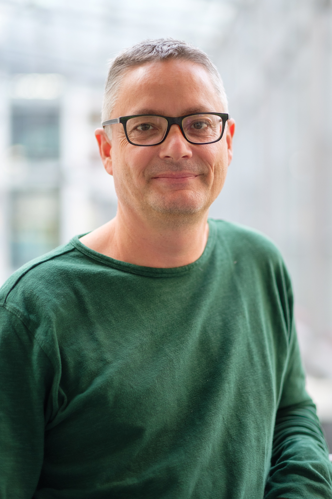

Christian Gaser (Head of Structural Brain Mapping Group) is an Associate Professor of Computational Neuroscience/Neuroimaging at the Jena University Hospital in Germany. He studied Electrical Engineering and Technical Acoustics in Chemnitz and Dresden and received his PhD degree in Neuroscience from the University of Magdeburg, Germany in 2001. He was a post-doctoral fellow at Harvard Medical School in Boston in 2001 and was visiting as post-doctoral fellow at UCLA in Los Angeles, Mount Sinai School of Medicine in New York, Australian National University in Canberra, and Auckland University. In 2005, he became Assistant Professor of Computational Neuroscience at University of Jena.
From 2007-2014 he was an independent research group leader, funded by the Federal Ministry of Education and Research. His research program is focused on the development of advanced computational tools for the analysis of structural brain data. In particular, he develops and applies algorithms and tools for processing voxel- and surface-based imaging data that include segmentation, surface reconstruction, and disease prediction. He has developed several software tools, including the Computational Anatomy Toolbox for performing voxel- and surface-based morphometry, which is widely used in the scientific community.
 Katja Franke studied Psychology in Halle and Munich and received her PhD degree in Neuroscience from the University of Zurich, Switzerland in 2013.
Katja Franke studied Psychology in Halle and Munich and received her PhD degree in Neuroscience from the University of Zurich, Switzerland in 2013.
From 2004-2007 she worked as Research Assistant at the University of Ulm, Germany and joined the Structural Brain Mapping Group in 2007. Her research topics cover BrainAGE, brain maturation, voxel-based morphometry, and intelligence/giftedness.
 Robert Dahnke studied Computer Science at University of Jena and received his PhD degree in Computer Science from the University of Ilmenau, Germany in 2013.
Robert Dahnke studied Computer Science at University of Jena and received his PhD degree in Computer Science from the University of Ilmenau, Germany in 2013.
He joined the Structural Brain Mapping Group in 2008. From 2019-2021 he worked as PostDoc at the Center of Functionally Integrative Neuroscience (CFIN) at the Aarhus University, Denmark. His research focuses on the development of computational tools for the analysis of structural brain data that are mostly integrated in the Computational Anatomy Toolbox (CAT) of the Statistical Parametric Mapping (SPM) software. In particular, he is intensively involved in the development of algorithms and tools for processing voxel- and surface-based imaging data, including segmentation, spatial registration, surface reconstruction, cortical measures, and image quality control.
 Polona Kalc studied Psychology (MA) and Biology (Bsc) at the University of Ljubljana, Slovenia.
After a short stay as a research assistant in Laboratory for gut-brain axis studies at TARGID (KU Leuven, Belgium), she joined Structural Brain Mapping Group in 2021 when she started her PhD project on lifestyle factors affecting brain ageing.
She is interested in systems and data-driven approaches to study the interconnectedness of the brain and the rest of our inner and outer environment.
Polona Kalc studied Psychology (MA) and Biology (Bsc) at the University of Ljubljana, Slovenia.
After a short stay as a research assistant in Laboratory for gut-brain axis studies at TARGID (KU Leuven, Belgium), she joined Structural Brain Mapping Group in 2021 when she started her PhD project on lifestyle factors affecting brain ageing.
She is interested in systems and data-driven approaches to study the interconnectedness of the brain and the rest of our inner and outer environment.
Tannaz Saraei studied Information Technology Engineering (MSc) at University of Teheran, Iran.
She joined the Structural Brain Mapping Group in 2021 and started her PhD project about BrainAGE and nutrition.
Alumni
Gabriel Ziegler, PhD
Rachel Yotter Brenn, PhD
Alissa Winkler, PhD
Daniel Mietchen, PhD